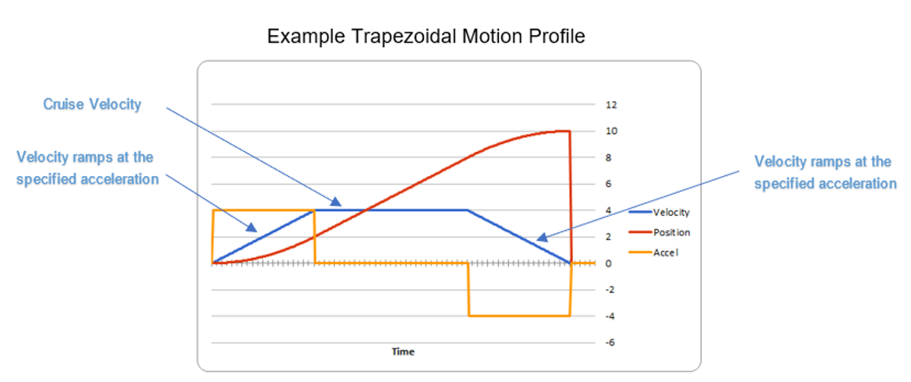
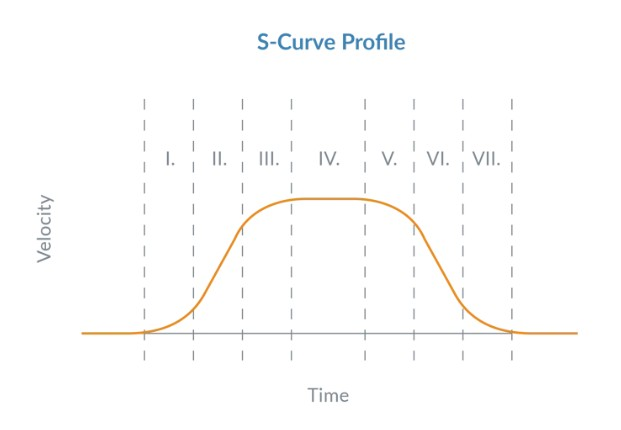
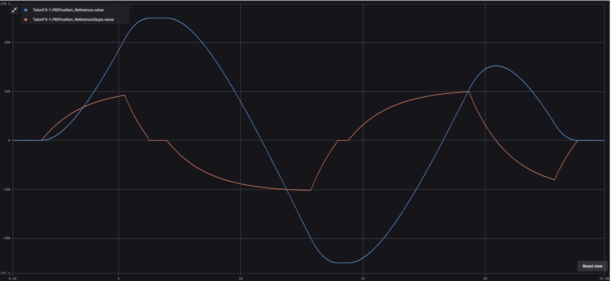

Motion Profiling
Motion Profiling is a control algorithm that generates a detailed trajectory, or “path” for a robot’s movement by defining its desired position, velocity, and acceleration over a specific time period. It allows for smoother, more precise motion by controlling factors like speed and acceleration, often using profiles like trapezoidal or S-curve, to ensure the robot reaches a goal efficiently while minimizing abrupt changes in acceleration (jerk). More simply put, a motion profile is a predefined path that a mechanism follows to achieve specific motion.
Trapezoidal Motion Profile
While feedforward and feedback (PID) control offer convenient ways to achieve a given setpoint, we are often still faced with the problem of generating setpoints for our mechanisms. While the naive approach of immediately commanding a mechanism to its desired state may work, it is often suboptimal. To improve the handling of our mechanisms, we often wish to command mechanisms to a sequence of setpoints that smoothly interpolate between its current state, and its desired goal state.
A Trapezoidal Motion Profile is a type of motion profile used in control systems characterized by three distinct phases: acceleration, constant velocity, and deceleration. It is defined by a trapezodial shape in its velocity-time graph which consists of the following phases:
Acceleration Phase - The system accelerates from rest to a maximum velocity. This phase is characterized by a constant acceleration.
Constant Velocity Phase - The system moves at a constant maximum velocity for a specified duration or distance. This phase allows for efficient movement without changing speed.
Deceleration Phase - The system decelerates from the maximum velocity back to rest. Similar to the acceleration phase, this phase also feature constant deceleration.
The benefits of trapezodial motion profiles are:
Smooth Motion - the trapezodial profile provides smooth acceleration and deceleration, reducing the risk of jerky movements and vibrations.
High Precision - It allows for precise control over the movement of mechanical systems, making it ideal for applications that require high accuracy.
Flexibility - The profile can be easily adjusted to suit different applications and requirements.
Energy Efficiency - By optimizing the movement of mechanical systems, trapezodial profiles can help reduce energy consupmtions.

Taking a look at the graph above you can see the distinct trapezoidal shape of velocity. (The blue line). This shows the constant acceleration to a maximum velocity and then the constant deceleration to zero.
Now take a look at the Position. (The red line) It shows starting at zero and slowly going faster until the position is changing at a constant rate and then slowing down to precisely hit the setpoint. (In this example 10 units)
And finally, take a look at the Acceleration. (The yellow line) It starts out applying full power to the motor then it turns off the acceleration once we hit maximum velocity. And then it’s acceration goes negative (applying the brakes) to slow the robot down to zero.
S-curve Motion Profile
An S-curve motion profile is a motion control technique that creates a smooth, gradual “S” shape on a velocity-time graph, achieved by modulating the acceleration over time. Unlike trapezoidal profiles with abrupt changes in acceleration, the S-curve profile minimizes “jerk” (the rate of change of acceleration), which reduces mechanical vibration, increases component lifespan, prevents overshoot, and ensures smoother motion for sensitive applications. This results in a more accurate, efficient, and comfortable motion for the system.

An S-curve profile progresses through several phases, gradually changing acceleration to create a smooth curve:
Initial Acceleration: Acceleration increases linearly from zero to a maximum rate.
Maximum Acceleration: The system maintains a constant maximum acceleration until it approaches the peak velocity.
Decreasing Acceleration: Acceleration begins to decrease linearly until it reaches zero.
Constant Velocity: The system moves at a constant velocity.
Deceleration: A symmetrical process to the acceleration phases, where deceleration gradually increases and then decreases.
Constant Deceleration: The profile then maintains a constant deceleration rate.
Final Deceleration: The acceleration decreases to zero, bringing the system to a smooth stop.
What makes S-curve profiles so powerful is that they inject dramatically less vibrational energy into the connecting mechanisms and the load. Just as importantly, compared to trapezodial profiles, S-curves provide an additional control mechanism for cancelling oscillations in the load by adjusting the ratio of the profile’s transistion phases to the constant acceleration phases. These features can have a dramatic impact on the effective transfer time. (The effective transfer time is the time from when the load begins moving to when it finally actually settles.) For high-speed point-to-point moves a tuned S-curve can reduce the effective transfer time by 25% or more depending on the nature of the mechanism being controlled.
Example Motion Profile Path
This example represents a motion profile where the mechanism accelerated uniformly to a maximum velocity of 5 m/s and then maintains that velocity. elow is a list of the trajectory points in the path.
Time (s) |
Position (m) |
Velocity (m/s) |
Acceleration (m/s^2) |
|---|---|---|---|
0.0 |
0.0 |
0.0 |
0.0 |
0.1 |
0.05 |
0.5 |
5.0 |
0.2 |
0.15 |
1.0 |
5.0 |
0.3 |
0.30 |
1.5 |
5.0 |
0.4 |
0.50 |
2.0 |
5.0 |
0.5 |
0.75 |
2.5 |
5.0 |
0.6 |
1.05 |
3.0 |
5.0 |
0.7 |
1.40 |
3.5 |
5.0 |
0.8 |
1.80 |
4.0 |
5.0 |
0.9 |
2.25 |
4.5 |
5.0 |
1.0 |
2.75 |
5.0 |
0.0 |
Key:
Time (s) - The time elapsed since the start of the motion
Position (m) - The position of the component at the given time
Velocity (m/s) - The velocity of the componenet at the given time
Acceleration (m/s^2) - The acceleration of the component at a given time
Important
Motion Profile Path playback mechanisms include a PID controller. This controller looks at each time step and determines if the robot is exactly where the path expects it to be. Then the PID values are applied to adjust the next time increment to help the robot remain exactly on path.
Motion Magic
Motion Magic is a control mode that provides the benefit of Motion Profiling without needing to generate motion profile trajectory points. When using Motion Magic®, the motor will move to a target position using a motion profile, while honoring the user specified acceleration, maximum velocity (cruise velocity), and optional jerk.
The benefits of this control mode over “simple” PID position closed-looping are:
Control of the mechanism throughout the entire motion (as opposed to racing to the end target position)
Control of the mechanism’s inertia to ensure smooth transitions between setpoints
Improved repeatability despite changes in battery load
Improved repeatability despite changes in motor load
After gain/settings are determined, the robot controller only needs to periodically set the target position.
There is no general requirement to “wait for the profile to finish”. However, the robot application can poll the sensor position and determine when the motion is finished if need be.
Motion Magic functions by generating a trapezoidal/S-Curve velocity profile that does not exceed the specified cruise velocity, acceleration, or jerk. This is done automatically by the motor controller.
Important
If the Motion Magic jerk is set to a nonzero value, the generated velocity profile is no longer trapezoidal, but instead is a continuous S-Curve (corner points are smoothed).
Example Motion Magic - Velocity
Note
For this example we will be referencing the ProgTrain3 project. You should download the project from the team GitHub.
ShooterConstants
First, let’s take a look at the Constants file. We define a new slot for the PID Values. The terms are the same as in the prvious example, with the exception of two new terms; kV and kA. kV is the voltage required for 1 revolution of the motor, in the case 0.12. kA is the acceleration and is based on the rate of rotations per second per second. SO in this case we are adding 0.01 volts per to get a 0.01 rotation per second per second increase.
Note
kV and kA terms are determined through PID Tuning. See the sections below on how to determine kV & kA.
).withSlot2(
new Slot2Configs() /* Motion Magic Velocity */
.withKS(0.25) // Add 0.25 V output to overcome static friction
.withKV(.12) // A velocity target of 1 rps results in 0.12 V output
.withKA(0.01) // An acceleration of 1 rps/s requires 0.01 V output
.withKP(4.8) // A position error of 2.5 rotations results in 12 V output
.withKI(0) // no output for integrated error
.withKD(0.1) // A velocity error of 1 rps results in 0.1 V output
).withMotionMagic(
new MotionMagicConfigs()
.withMotionMagicCruiseVelocity(80.0) // Target cruise velocity of 80 rps
.withMotionMagicAcceleration(160) // Target acceleration of 160 rps/s (0.5 seconds)
.withMotionMagicJerk(1600) // Target jerk of 1600 rps/s/s (0.1 seconds))
);
Notice that we also added a motion magic configuration. For motion magic, we want a constant velocity of 80 rotations per second. We will use an acceleration of 160 rotations per second per second to get to our cruise velocity and to decelerate from our cruise velocity to full stop. Jerk is rate of change of the acceleration and controls how smoothly the motor accelerates. Think of it as easing into acceleration instead of slamming on the gas pedal. A higher Jerk will take longer for the motor to accelerate. A lower Jerk will be faster, but will result is ‘stilted’ motion with sudden movements.
These are all the changes to the constants class.
Note
The way to reduce Jerk is to reduce acceleration.
Important
A Jerk of 0.0 indicates no limit on acceleration.
How to determine KV
- To find KV:
Run your motor at several steady velocities.
Record the voltage required to maintain each velocity.
Plot voltage vs. velocity.
The slope of the line is your KV.
Example: If 0.12 V is needed for 1 rps, then KV = 0.12 V/rps
How to determine kA?
- To find KA:
This is trickier since acceleration is transient.
Use a motion profile that includes acceleration (e.g., trapezoidal).
Measure the voltage spike during acceleration.
Subtract the steady-state voltage (from KV) to isolate the acceleration component.
Divide by the acceleration to get KA.
Example: If an extra 0.06 V is needed during 2 rps² acceleration, KA = 0.03 V/rps²
Shooter Subsystem
There are no changes to the Shooter Subsystem for Motion Magic. That is one of the key benefits to seperating the business logic from the motor logic. As Motion Magic is a motor control feature, all of the changes are in the ShooterKraken class.
Shooter Kraken
The first thing we change in ShooterKraken is to define two new motion controls. The first uses Motion Magic with voltage. This means that the control will adjust the motor voltage. Note that it uses PID Slot 2 to include the new settings we defined in constants.
The second Motion Magic control uses Torque. It uses the same torque PID setting that we defined in the previous section.
private final MotionMagicVoltage m_mmVelocityVoltage = new MotionMagicVoltage(0).withSlot(2);
private final MotionMagicTorqueCurrentFOC m_mmVelocityTorque =
new MotionMagicTorqueCurrentFOC(0.0).withSlot(1);
Next, we modify our variabe to determine which of the motor controls we want to run. Last time we used a boolean to select between two control modes. Now that we have four control modes we change the variable to an integer.
/****************************************************************
* Change this variable to select which motor control feature runs
* 0-means run Velocity Voltage Control Mode
* 1-means run Velocity Torque Control Mode
* 2-means run Motion Magic Voltage Control Mode
* 3-means run Motion Magic Torque Control mode
*****************************************************************/
private int controlMode = 0;
And finally, we change our control mode depending on the value of the controlMode variable.
switch (controlMode) {
case 0: /* Use velocity voltage */
m_talonFX.setControl(m_velocityVoltage.withVelocity(desiredRotationsPerSecond));
case 1: /* Use velocity torque */
m_talonFX.setControl(m_velocityTorque.withVelocity(desiredRotationsPerSecond));
case 2: /*Use Motion Magic Voltage */
m_talonFX.setControl(m_mmVelocityVoltage.withPosition(desiredRotationsPerSecond));
case 3: /*Use Motion Magic Torque Current FOC */
m_talonFX.setControl(m_mmVelocityTorque.withPosition(desiredRotationsPerSecond));
}
That’s it! These are all the changes neccessary to support running a motor under Motion Magic control. It was very little code to add, to get the the benefits of a very smooth and repeatable motion.
Motion Magic Expo
Note
This section is copied directly from the CTRE manual. See the link to original document in the References section
Whereas traditional Motion Magic generates a trapezoidal or S-Curve profile, Motion Magic Expo generates an exponential profile. This allows the profile to best match the system dynamics, reducing both overshoot and time to target compared to a trapezoidal profile. Generally, this makes the Expo control FASTER that the traditional position controls.
Important
Motion Magic Expo controls are only used for Position PIDS!

Motion Magic Expo uses the kV and kA characteristics of the system, as well as an optional cruise velocity. The Motion Magic Expo kV and kA configs are separate from the slot gain configs, as they may use different units and have different behaviors.
The Motion Magic Expo kV represents the voltage required to maintain a given velocity and is in units of Volts/rps. Dividing the supply voltage by kV results in the maximum velocity of the profile. As a result, when supply voltage is fixed, a higher profile kV results in a lower profile velocity. Unlike with gain slots, it is safer to start from a higher kV than what is ideal.
The Motion Magic Expo kA represents the voltage required to apply a given acceleration and is in units of Volts/(rps/s). Dividing the supply voltage by kA results in the maximum acceleration of the profile from 0. As a result, when supply voltage is fixed, a higher profile kA results in a lower profile acceleration. Unlike with gain slots, it is safer to start from a higher kA than what is ideal.
The following parameters must be set when controlling using Motion Magic® Expo:
Expo kV - voltage required to maintain a given velocity, in V/rps
Expo kA - voltage required to apply a given acceleration, in V/(rps/s)
Cruise Velocity (optional) - peak velocity of the profile; set to 0 to target the system’s max velocity
Important
If the Motion Magic cruise velocity is set to zero, the profile will accelerate towards the maximum possible velocity based on the profile kV. Otherwise, the profile will accelerate towards the specified cruise velocity.
Example Motion Magic Expo - Position
Turret Constants
First, let’s take a look at the Constants file. We define a new slot for the PID Values. The terms are the same as in the previous example. Notice that we also added a motion magic configuration. For Motion Magic Expo, we want the controller to use the maximum speed possible to get to our position point so we have seth the cruise velocity to zero.
For Expo velocity (kV) we are using the same velocity target as in the previous example. Which means, a velocity target of 1 rps results in 0.12 V output.
For acceleration we need to be careful becuase the mechanism is going to move as fast as possible and we don’t want to break it. So we conservatively set the kA value to 0.1. This compares to the 0.01 kA we used in the the Motion Magic Velocity example. Rember that a higher kA will result in a slower acceleration in Expo. The exact opposite of Motion Magic Velocity! This is a conservative number that is a good plae to start for tuning this control.
).withSlot2(
new Slot2Configs() /* Motion Magic Expo */
.wwithKS(0.25) // Add 0.25 V output to overcome static friction
.withKV(.12) // A velocity target of 1 rps results in 0.12 V output
.withKA(0.01) // An acceleration of 1 rps/s requires 0.01 V output
.withKP(4.8) // A position error of 2.5 rotations results in 12 V output
.withKI(0) // no output for integrated error
.withKD(0.1) // A velocity error of 1 rps results in 0.1 V output
).withMotionMagic(
new MotionMagicConfigs()
.withMotionMagicCruiseVelocity(0.0) // Unlimited cruise velocity
.withMotionMagicExpo_kV(0.12) // kV is around 0.12 V/rps
.withMotionMagicExpo_kA(0.1) // Use a slower kA of 0.1 V/(rps/s)
);
These are all the changes to the constants class.
Turret Subsystem
There are no changes to the Turret Subsystem for Motion Magic Expo. That is one of the key benefits to seperating the business logic from the motor logic. As Motion Magic Expo is a motor control feature, all of the changes are in the TurretKraken class.
Turret Kraken
The first change we make is to define our new motor controls for Expo. We define a Motion Magic Expo Voltage control using the PID Slot 2 gains that we defined in constants. Then we define the same control but instead using TorqueFOC. We use the same PID values for the Torque control as we did in all the previous examples.
..code-block:: Java
private final MotionMagicExpoVoltage m_mmExpoVoltage = new MotionMagicExpoVoltage(0).withSlot(2); private final MotionMagicExpoTorqueCurrentFOC m_mmExpoTorque = new MotionMagicExpoTorqueCurrentFOC(0.0).withSlot(1);
And finally, we change the runVelocity method to set the proper motor control mode base on the value of the controlMode variable:
/***************************************************************************
* The runVelocity function can run (based on the controlMode Variable either:
* 0-means run Position Voltage Control Mode
* 1-means run Position Torque Control Mode
* 2-means run Motion Magic Expo Voltage Control Mode
* 3-means run Motion Magic Expo Torque Control mode
***************************************************************************/
public void runPosition(double desiredRotations) {
switch (controlMode) {
case 0: /* Use Position Voltage */
m_talonFX.setControl(m_positionVoltage.withPosition(desiredRotations));
case 1: /* Use Position Torque */
m_talonFX.setControl(m_positionTorque.withPosition(desiredRotations));
case 2: /* Use Motion Magic Position Voltage */
m_talonFX.setControl(m_mmExpoVoltage.withPosition(desiredRotations));
case 3: /* Use Motion Magic Position Torque */
m_talonFX.setControl(m_mmExpoTorque.withPosition(desiredRotations));
}
}
And that’s it. These are all the changes neccessary to convert the sample project use Motion Magic Expo.